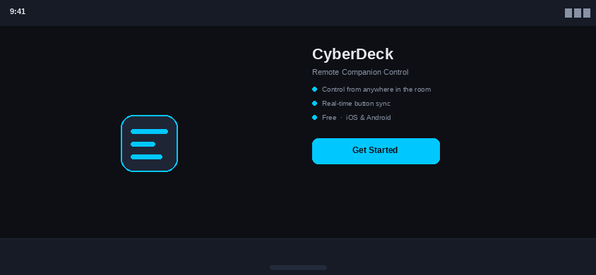
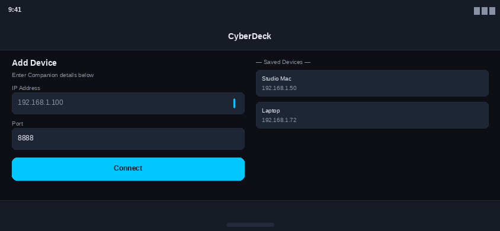
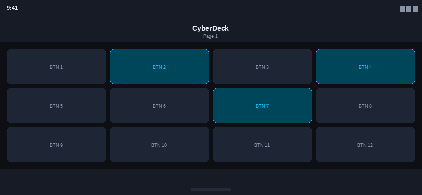

How to Use CyberDeck
Get up and running in minutes. All you need is your mobile device and a machine running Companion on the same network.

Install the App
Download CyberDeck from the App Store or Google Play. The app is free and requires iOS 15+ or Android 10+. No account or registration is needed.

Connect to Companion
Make sure your phone and the machine running Companion are on the same Wi-Fi network. Open CyberDeck, tap Add Device, and enter the IP address and port shown in Companion's settings. CyberDeck will connect automatically.

Take Control
Your Companion button grid will appear on screen, fully interactive. Tap any button to trigger it remotely. Pages, button labels, and colors all sync live from your Companion configuration — no extra setup required.
About & Support
CyberDeck is an independent project. Reach out if you run into any issues or have a feature request.
The Developer
Jeffrey Bertuch
Independent developer passionate about live production tools and open source software. CyberDeck was built out of a need for a clean, fast mobile interface for Companion.
Support
Found a bug? Have a question about setup? There are two ways to get help:
-
support@cyberdeckapp.com
Email for direct support. Expect a reply within a few days.
-
GitHub Issues
Open an issue on GitHub for bugs, crashes, or feature requests.